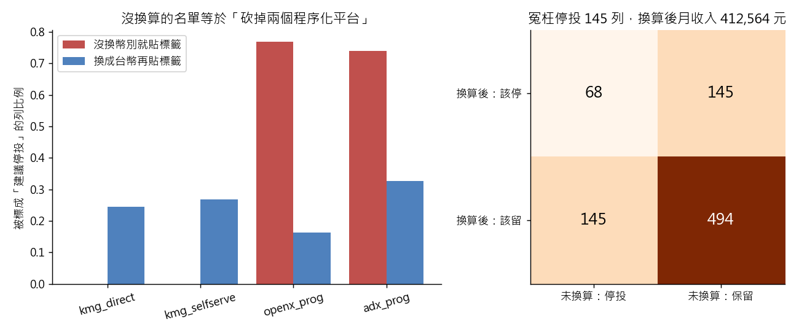

練習 13 - 停投版位清單
在本單元中，會介紹第 13 題「業務部要一份建議停投的版位清單，但上次照數字砍完反而少了一塊收入」背後的商業問題、它練的是哪一種資料分析，以及從資料到結論的完整做法、程式與圖表。
建議先回 Hub - 資料分析練習案例庫 自己試著做一次，再來對照這一頁。
題目
有人會這樣問你：這個月廣告有八百多筆投放紀錄，我要知道哪些「活動×版位×日」是賠本的，下個月直接停掉。但上次照數字砍完，營收反而掉了一塊，這次要你確定砍對人。
| 難度 | 挑戰 |
| 組別 | 第 4 組：預測、門檻與代價 |
| 用哪張表 | ad_daily（L1 釋出的 ad_daily_2024_10.csv） |
| 對應單元 | 模型看起來太準 就是出事了（同時練 預測會不會退訂 的成本門檻） |
這一題在商業上要回答什麼
停投名單直接砍掉收入。標籤錯了，模型越準砍得越徹底：沒換幣別的名單，會冤枉停掉每個月 41 萬元的投放。
這一題練的是哪一種資料分析
這一題練的是標籤品質：監督式學習的上限由標籤決定，資料清理必須發生在貼標籤之前。再用 confusion matrix 比較兩份名單，把「冤枉停投」與「該停沒停」各有多少、各值多少錢算出來。
怎麼做
先算每一列的千次曝光收入（revenue ÷ impression_cnt × 1000）當效益指標，低於全體第 25 百分位就貼上「建議停投」的標籤，再用 placement、platform、advertiser_industry 跑一個簡單分類（glm 或決策樹）看是什麼在決定這個標籤。關鍵不在模型在標籤：revenue 旁邊有 currency 欄，adx_prog 與 openx_prog 記的是美金，要先乘 31.5 換成台幣。整套做兩次——不換算一次、換算一次——把兩份停投名單逐列對照，看有幾列翻面。最後用誤判成本定門檻（停錯一個賺錢版位等於少收真實收入，留著一個低效版位只是版面被佔住），並檢查 viewability_rate 的缺失是不是隨機的。語言用 R，因為這題七成的工是清理跟分群彙總，dplyr 一條管線從換幣別、算 eCPM、貼標籤到出成本表就寫完，yardstick 直接給混淆矩陣，也接得上後面同樣用 R 的存活分析模組。
程式
這一題的分析用 R，整支程式如下。從 kmg_data_universe 這個資料夾執行，資料放在 dist/L1 與 dist/L2；cat 那幾行會把算出來的關鍵數字印出來。
# ex13 建議停投的版位清單：標籤錯，模型越準錯得越徹底（R：dplyr＋yardstick）
lib <- Sys.getenv("R_LIBS_USER")
.libPaths(c(lib, .libPaths()))
suppressMessages({ library(dplyr); library(yardstick) })
res_dir <- "teacher/exercise_runs/results"
dir.create(res_dir, showWarnings = FALSE, recursive = TRUE)
getv <- function(df, key, col) dfcol[dfnames(df)[1] == key]
RATE <- 31.5
a <- read.csv("dist/L1/ad_daily_2024_10.csv", fileEncoding = "UTF-8-BOM", stringsAsFactors = FALSE) %>%
mutate(twd = ifelse(currency == "USD", revenue * RATE, revenue),
ecpm_naive = revenue / impression_cnt * 1000,
ecpm = twd / impression_cnt * 1000)
cat("n_currency", n_distinct(a$currency), "\n")
cat("naive_total", sum(a$revenue), "\n")
cat("converted_total", sum(a$twd), "\n")
a <- a %>% mutate(stop_naive = ecpm_naive < quantile(ecpm_naive, 0.25),
stop_conv = ecpm < quantile(ecpm, 0.25))
rn <- a %>% group_by(platform) %>% summarise(r = mean(stop_naive), .groups = "drop")
rc <- a %>% group_by(platform) %>% summarise(r = mean(stop_conv), .groups = "drop")
cat("naive_flag_adx_prog", getv(rn, "adx_prog", "r"), "\n")
cat("naive_flag_openx_prog", getv(rn, "openx_prog", "r"), "\n")
cat("naive_flag_kmg_direct", getv(rn, "kmg_direct", "r"), "\n")
cat("naive_flag_kmg_selfserve", getv(rn, "kmg_selfserve", "r"), "\n")
cat("converted_flag_min", min(rc$r), "\n")
cat("converted_flag_max", max(rc$r), "\n")
flips <- sum(a$stop_naive != a$stop_conv)
cat("flipped_rows", flips, "\n")
cat("flipped_share", flips / nrow(a), "\n")
mp <- a %>% group_by(platform) %>% summarise(m = median(ecpm), .groups = "drop")
cat("median_ecpm_adx_prog", getv(mp, "adx_prog", "m"), "\n")
cat("median_ecpm_openx_prog", getv(mp, "openx_prog", "m"), "\n")
cat("median_ecpm_kmg_direct", getv(mp, "kmg_direct", "m"), "\n")
ml <- a %>% group_by(placement) %>% summarise(m = median(ecpm), .groups = "drop")
cat("median_ecpm_sidebar", getv(ml, "sidebar", "m"), "\n")
cat("median_ecpm_video_preroll", getv(ml, "video_preroll", "m"), "\n")
cat("viewability_missing_share", mean(is.na(a$viewability_rate)), "\n")
mb <- a %>% group_by(platform) %>% summarise(m = mean(is.na(viewability_rate)), .groups = "drop")
cat("missing_zero_on_own_platforms", as.numeric(all(mb$m[!mb$platform %in% c("adx_prog", "openx_prog")] == 0)), "\n")
cat("viewability_mean_dropna", mean(a$viewability_rate, na.rm = TRUE), "\n")
cat("viewability_mean_own", mean(a$viewability_rate[a$platform %in% c("kmg_direct", "kmg_selfserve")], na.rm = TRUE), "\n")
a$truth <- factor(ifelse(a$stop_conv, "stop", "keep"), levels = c("stop", "keep"))
m <- glm(stop_conv ~ placement + platform + advertiser_industry, data = a, family = binomial)
a$est <- factor(ifelse(predict(m, type = "response") > 0.5, "stop", "keep"), levels = c("stop", "keep"))
acc <- accuracy(a, truth = truth, estimate = est)$.estimate
cmat <- conf_mat(a, truth = truth, estimate = est)
畫圖的程式
圖用 Python 畫，因為 Windows 上 R 的中文字型不好設定。這支程式照同一套定義再算一次，順便確認和 R 的結果一樣。
"""第 13 題的圖與 confusion matrix（R 那支負責主要數字，這支重算停投名單並畫中文圖）。"""
from _kmg import *
a = ad()
a["twd"] = twd(a)
a["ecpm_naive"] = a["revenue"] / a["impression_cnt"] * 1000
a["ecpm"] = a["twd"] / a["impression_cnt"] * 1000
a["stop_naive"] = a["ecpm_naive"] < a["ecpm_naive"].quantile(0.25)
a["stop_conv"] = a["ecpm"] < a["ecpm"].quantile(0.25)
print("Python 重算 標籤翻面列數", int((a["stop_naive"] != a["stop_conv"]).sum()))
# 課堂概念：把換算後的標籤當正確答案，未換算的名單就是一個「預測」
t, p = a["stop_conv"], a["stop_naive"]
cm = {"TP": int((p & t).sum()), "FP": int((p & ~t).sum()), "FN": int((~p & t).sum()), "TN": int((~p & ~t).sum())}
print("未換算名單的 confusion matrix（TP/FP/FN/TN）", [cm[k] for k in ("TP", "FP", "FN", "TN")])
wrong = float(a.loc[p & ~t, "twd"].sum())
print("被冤枉停投的列換算後收入（元）", round(wrong))
order = ["kmg_direct", "kmg_selfserve", "openx_prog", "adx_prog"]
rn = a.groupby("platform")["stop_naive"].mean()
rc = a.groupby("platform")["stop_conv"].mean()
fig, ax = plt.subplots(1, 2, figsize=(10, 4.2), gridspec_kw={"width_ratios": [3, 2]})
x = np.arange(4)
ax[0].bar(x - 0.2, rn[order], 0.4, label="沒換幣別就貼標籤", color="#c0504d")
ax[0].bar(x + 0.2, rc[order], 0.4, label="換成台幣再貼標籤", color="#4f81bd")
ax[0].set_xticks(x, order, rotation=15)
ax[0].set_ylabel("被標成「建議停投」的列比例")
ax[0].set_title("沒換算的名單等於「砍掉兩個程序化平台」")
ax[0].legend()
mat = np.array([[cm["TP"], cm["FN"]], [cm["FP"], cm["TN"]]])
ax[1].imshow(mat, cmap="Oranges")
for i in range(2):
for j in range(2):
ax[1].text(j, i, str(mat[i, j]), ha="center", va="center", fontsize=14, color="white" if mat[i, j] > 300 else "black")
ax[1].set_xticks([0, 1], ["未換算：停投", "未換算：保留"])
ax[1].set_yticks([0, 1], ["換算後：該停", "換算後：該留"])
ax[1].set_title("冤枉停投 145 列，換算後月收入 %s 元" % format(round(wrong), ","))
save_fig(fig, "ex13_stop_list.png")
程式開頭的 from _kmg import * 載入共用的讀檔、去重、換幣別與畫圖函式，內容在 練習 01 - 月會上的則數對不對 的「共用的讀檔函式」那一段。
結果
不換幣別，852 筆的總收入會算成 194.8 萬，真值是 297.5 萬，少算三分之一。停投名單會變成：adx_prog 有 74%、openx_prog 有 77% 被標成賠本，自家直客與自助平台一筆都沒有——整份名單其實在說「把兩個程序化平台全砍掉」，而那正是上次砍完營收掉一塊的原因。換算之後名單完全變樣：四個平台的標記比例落在 16% 到 33% 之間，852 列裡有 290 列（34%）標籤翻面。換算後再看，程序化平台的 eCPM 中位數（44.5 與 48.6）跟自家直客（46.9）根本差不多，真正低效的是版位不是平台——sidebar 中位數只有 22.2，video_preroll 有 143.6。另外 viewability_rate 缺了 12.8%，而且全部缺在兩個程序化平台（各缺約四成）；這裡會推翻一個直覺：直接 dropna 之後平均可視率是 0.613，跟自家平台的 0.610 幾乎一樣，所以被扭曲的不是平均值，而是「誰還留在資料裡」——程序化的列少了四成，後面任何以列為單位的統計都會被自家平台主導。
跑出來的關鍵數字
| 項目 | 結果 |
|---|---|
| 幣別種類 | 2 |
| 直接加總 | 1947798.96 |
| 換算後總額 | 2975076.475 |
| 未換算 停投比例 adx_prog | 0.7407 |
| 未換算 停投比例 openx_prog | 0.7687 |
| 未換算 停投比例 kmg_direct | 0 |
| 未換算 停投比例 kmg_selfserve | 0 |
| 換算後 停投比例 最低平台 | 0.1633 |
| 換算後 停投比例 最高平台 | 0.3259 |
| 標籤翻面列數 | 290 |
| 標籤翻面比例 | 0.3404 |
| 換算後 eCPM 中位數 adx_prog | 44.5484 |
| 換算後 eCPM 中位數 openx_prog | 48.5507 |
| 換算後 eCPM 中位數 kmg_direct | 46.9251 |
| 換算後 eCPM 中位數 sidebar | 22.2354 |
| 換算後 eCPM 中位數 video_preroll | 143.5696 |
| 可視率缺失比例 | 0.1279 |
| 自家平台可視率沒有缺失 | 1 |
| dropna 後平均可視率 | 0.6134 |
| 自家平台平均可視率 | 0.6098 |
| 標籤翻面列數 | 290 |
| 未換算名單的 confusion matrix（TP/FP/FN/TN） | 68、145、145、494 |
| 被冤枉停投的列換算後收入（元） | 412564 |
補充
- 用換算後的標籤跑邏輯斯迴歸（版位、平台、廣告主產業），準確率 97.4%
圖表

左圖是各平台被標成「建議停投」的比例，紅色是沒換幣別就貼標籤，藍色是換算後再貼。右圖把換算後的標籤當正確答案，看沒換算那份名單錯在哪：145 列被冤枉停投、145 列該停沒停。
連到課堂概念
confusion matrix
把換算幣別後的標籤當正確答案，未換算那份停投名單是 TP 68、FP 145（冤枉停投）、FN 145（該停沒停）、TN 494。FP 和 FN 剛好一樣多，是因為兩份名單都切在第 25 百分位；但代價不一樣：被冤枉停投的那 145 列，換算後一個月有 41 萬元收入。見 Confusion Matrix 與誤判代價
接著做
上一題 練習 12 - 準確率 99% 的模型、下一題 練習 14 - 讀者眼中有幾種內容，或回到 Hub - 資料分析練習案例庫 挑別的題目。
學生版｜更新於 2026-09-13 11:19